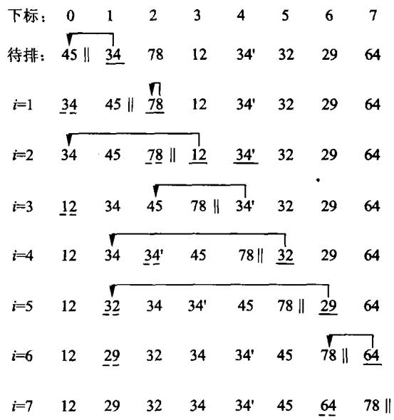
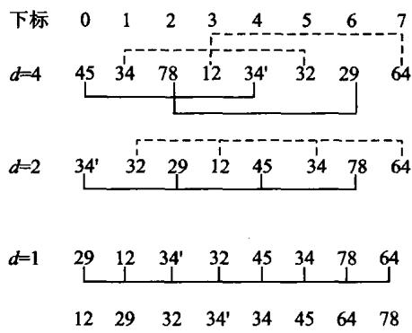
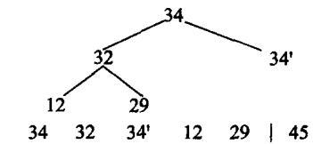
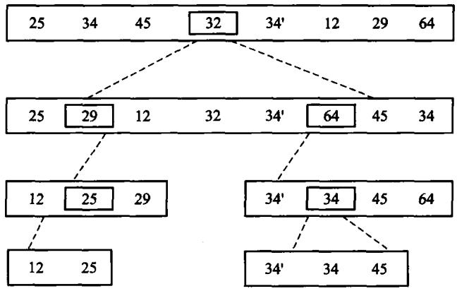
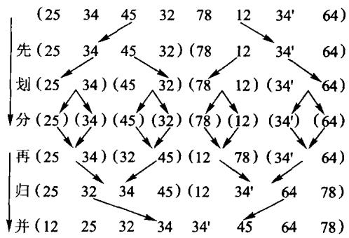
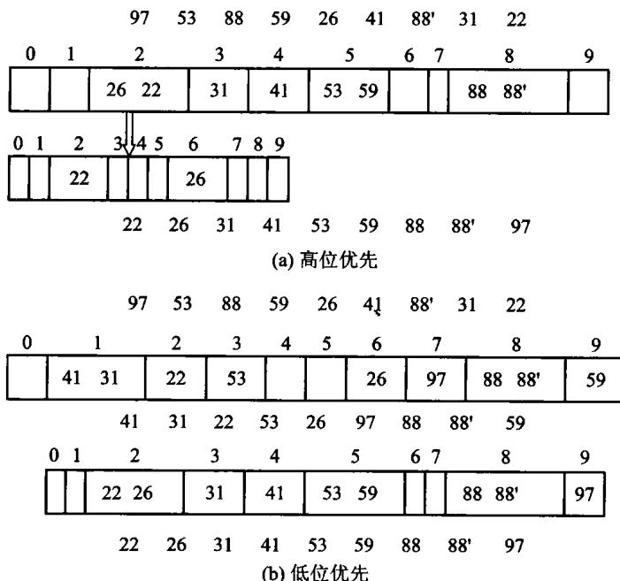
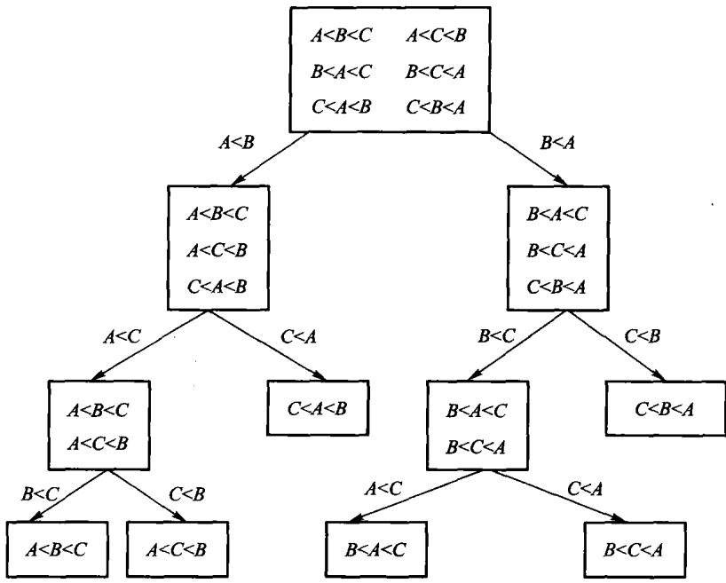

把一组记录按关键码重排成有序序列。
一条主线：代价从 O(n2) 到 O(n log n)，靠的是什么。
稳定性不是可有可无：按多个字段排序时， 先排次要字段、再用稳定算法排主要字段，就能得到「主序内按次序」的结果。

// 算法8.1：直接插入排序。相等元素不越过彼此，故稳定。
inline void insertion_sort(std::vector<int>& values) {
for (std::size_t index = 1; index < values.size(); ++index) {
const int value = values[index];
std::size_t hole = index;
while (hole != 0 && value < values[hole - 1]) {
values[hole] = values[hole - 1];
--hole;
}
values[hole] = value;
}
}所以它常被用作其它算法的收尾——快排/归并递归到小区间时改用插入排序。
n 小的时候 O(n2) 完全可能比 O(n log n) 快：常数小、没有递归开销、缓存友好。

先按大增量分组做插入排序，再逐步缩小增量，最后增量为 1。
为什么快：大增量时每组元素少、几乎有序； 小增量时整体已经接近有序，而插入排序恰好对这种输入极快。
代价与增量序列有关，「每次除以 2」约 O(n1.5)。不稳定。
第 i 轮从 [i,n) 扫出最小值，与位置 i 交换。
初始 45 34 78 12 34' 32 29 64
i=0 12 34 78 45 34' 32 29 64
i=1 12 29 78 45 34' 32 34 64
i=2 12 29 32 45 34' 78 34 64它省的是交换，不是比较。

// 算法8.4：手写最大堆筛选与堆排序，不委托 std::make_heap/sort_heap。
inline void sift_down(std::vector<int>& values, std::size_t root, std::size_t count) {
while (root * 2 + 1 < count) {
std::size_t child = root * 2 + 1;
if (child + 1 < count && values[child] < values[child + 1]) ++child;
if (values[root] >= values[child]) return;
using std::swap;
swap(values[root], values[child]);
root = child;
}
}
inline void heap_sort(std::vector<int>& values) {
for (std::size_t root = values.size() / 2; root != 0; --root) {
sift_down(values, root - 1, values.size());
}
for (std::size_t end = values.size(); end > 1; --end) {
using std::swap;
swap(values[0], values[end - 1]);
sift_down(values, 0, end - 1);
}
}每一趟比较相邻元素，把当前最大值“冒”到未排序区末尾。
5 1 4 2 8
1 4 2 5 8 第一趟，8 已就位
1 2 4 5 8 第二趟优化只改变最好情况，不改变最坏时间。

选一个轴值，把序列分成「小于它的」和「大于它的」两段，再各自递归。
inline std::size_t partition(std::vector<int>& values, std::size_t first, std::size_t last) {
const int pivot = values[last - 1];
std::size_t boundary = first;
for (std::size_t index = first; index + 1 < last; ++index) {
if (values[index] < pivot) {
using std::swap;
swap(values[boundary], values[index]);
++boundary;
}
}
using std::swap;
swap(values[boundary], values[last - 1]);
return boundary;
}
inline void quick_sort_range(std::vector<int>& values, std::size_t first, std::size_t last) {
if (last - first < 2) return;
const std::size_t middle = partition(values, first, last);
quick_sort_range(values, first, middle);
quick_sort_range(values, middle + 1, last);
}
// 算法8.6：手写快排。
inline void quick_sort(std::vector<int>& values) { quick_sort_range(values, 0, values.size()); }| 办法 | 效果 |
|---|---|
| 三者取中（首、中、尾） | 避开「已排序」这个最常见的坏输入 |
| 随机轴值 | 让坏输入无法被构造出来 |
| 小区间改插入排序 | 省掉递归开销，常数变小 |
| 递归改成对短的那半递归 | 栈深度降到 O(log n) |
最后一条常被忽略：不做的话，最坏情况下递归深度是 n， 在第 3 章那张表里就是段错误。

inline void merge_ranges(std::vector<int>& values, std::vector<int>& buffer,
std::size_t first, std::size_t middle, std::size_t last) {
std::size_t left = first;
std::size_t right = middle;
std::size_t output = first;
while (left < middle && right < last) {
buffer[output++] = values[right] < values[left] ? values[right++] : values[left++];
}
while (left < middle) buffer[output++] = values[left++];
while (right < last) buffer[output++] = values[right++];
for (std::size_t index = first; index < last; ++index) values[index] = buffer[index];
}
inline void merge_sort_range(std::vector<int>& values, std::vector<int>& buffer,
std::size_t first, std::size_t last) {
if (last - first < 2) return;
const std::size_t middle = first + (last - first) / 2;
merge_sort_range(values, buffer, first, middle);
merge_sort_range(values, buffer, middle, last);
merge_ranges(values, buffer, first, middle, last);
}
// 算法8.8：两路归并排序。
inline void merge_sort(std::vector<int>& values) {
std::vector<int> buffer(values.size());
merge_sort_range(values, buffer, 0, values.size());
}比较排序的下界是 Ω(n log n)——
n 个元素有 n! 种排列，每次比较至多把可能性减半， 所以至少要 log2(n!)=Ω(n log n) 次比较。
想更快，就只能不靠比较：直接用关键码的值去算位置。
关键码落在有限值域 [0,r) 时，为每个值准备一个桶：
输入: 3 1 3 0 2
计数: [1,1,1,2]
输出: 0 1 2 3 3时间 O(n+r)，空间 O(r)；它绕过比较排序下界， 因为直接用关键码算桶号。
值域很大而数据很少时，桶数组会浪费空间； 要保持稳定，每个桶必须按进入顺序输出。

// 算法8.11：LSD 基数排序。翻转符号位使二补码有符号 int 按无符号序排序。
inline void radix_sort(std::vector<int>& values) {
std::vector<int> buffer(values.size());
for (unsigned shift = 0; shift < 32; shift += 8) {
std::size_t counts[256]{};
for (int value : values) {
const auto key = static_cast<std::uint32_t>(value) ^ 0x80000000U;
++counts[(key >> shift) & 0xffU];
}
std::size_t offset = 0;
for (std::size_t& count : counts) { const std::size_t old = count; count = offset; offset += old; }
for (int value : values) {
const auto key = static_cast<std::uint32_t>(value) ^ 0x80000000U;
buffer[counts[(key >> shift) & 0xffU]++] = value;
}
values.swap(buffer);
}
}不移动大记录，只排序一张下标表 IndexArray。
记录下标: 0 1 2 3 4 5 6 7
关键码: 29 12 34 47 34 10 31 42
有序下标: 5 1 0 6 2 4 7 3按索引访问已经有序；必须原地重排时，再沿置换环搬记录。
| 算法 | 平均 | 最坏 | 额外空间 | 稳定 |
|---|---|---|---|---|
| 直接插入 | O(n2) | O(n2) | O(1) | 是 |
| Shell | O(n1.5) | 与增量有关 | O(1) | 否 |
| 直接选择 | O(n2) | O(n2) | O(1) | 否 |
| 堆排序 | O(n log n) | O(n log n) | O(1) | 否 |
| 快速排序 | O(n log n) | O(n2) | O(log n) | 否 |
| 归并排序 | O(n log n) | O(n log n) | O(n) | 是 |
| 基数排序 | O(d(n+r)) | O(d(n+r)) | O(n+r) | 是 |
本机 g++ 13.3 -O2 的两组结果：
| 输入 | 算法 | 时间 |
|---|---|---|
| 5 万随机数 | 冒泡 | 5821.9 ms |
| 5 万随机数 | 插入 | 213.5 ms |
| 2 万已有序 | 优化快排 | 105.9 ms |
| 2 万已有序 | 插入 | 约 0.0 ms |
同为 Θ(n2) 可以差 27 倍；近乎有序时，插入甚至胜过退化快排。
渐进阶先排除不合格算法，实测再决定常数与工作负载。

n 个互异元素有 n! 种排列；一次二元比较最多把候选情况分成两半。
判定树至少有 n! 个叶子，因此高度至少：
这限制的是只靠比较的排序。桶式与基数利用关键码结构， 不在这个模型里，所以能达到 O(n+r) 或 O(d(n+r))。
没有一个算法在所有维度上都最好——这是本章真正要传达的。
先问三个问题：数据能否全部放入内存？是否要求稳定？关键字是否有额外结构？答案决定比较排序、外排序或分配排序。
对 5, 2, 4, 2, 1：插入排序展示“局部有序”，快排展示分区，归并排序展示稳定合并；记录两个相同的 2 来观察稳定性。
插入排序逐步扩大左侧有序区；快排先分区，稳定性取决于实现；归并排序在相等时取左即可稳定。三者都得到 1,2,2,4,5，但中间状态、最坏代价和空间不同。
序列 [5,2,4,2] 先分成 [5,2]、[4,2]，各自排成 [2,5]、[2,4]，再用双指针合并为 [2,2,4,5]。
两个键相等时若总取右边元素，带卫星数据的记录可能交换，归并排序就不再稳定。
课堂练习：说明快排、堆排、归并的稳定性。答案：标准快排和堆排通常不稳定，归并可通过相等取左保持稳定。
插入、堆、快排、归并、计数和基数排序都有 Python 实现；固定容量桶和环形队列等存储细节仍由 C++ 版本承担。
# 算法8.1：直接插入排序。相等元素不越过彼此，故稳定。
def insertion_sort(values: list[int]) -> None:
for index in range(1, len(values)):
value = values[index]
hole = index
# `hole > 0` 这个条件在 Python 里是**承重的**，不是防御性写法：
# C++ 版越界会被 ASan 当场抓住，Python 的 values[-1] 却合法——
# 它悄悄环绕到最后一个元素，把排序结果搅乱而不报任何错。
while hole > 0 and value < values[hole - 1]:
values[hole] = values[hole - 1]
hole -= 1
values[hole] = valuepython3 tools/check_code.py code/ch08/sorting测试里所有排序算法互相对拍：同一组输入必须给出同样的结果， 稳定的那几个还要额外验证稳定性。
放映快捷键
→ / 空格下一页 ←上一页 Home / End首尾
N演讲者备注 O缩略图总览 F全屏 D深色
?这张帮助 Esc关闭
导出 PDF：浏览器打印（Ctrl/Cmd+P），每页一张幻灯片。